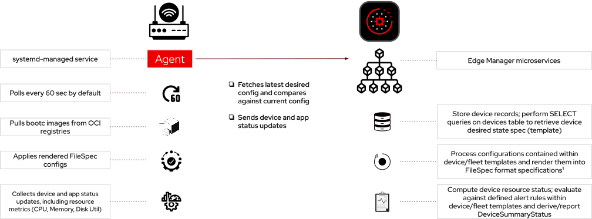

Considerations When Managing Edge Devices at Scale
Estimated reading time: 6 minutes.
- Objective
-
Understand why edge devices are best managed as sets instead of individually and learn different approaches for managing applications in edge environments.
| Work In Progress. |
Review of Red Hat Edge Manager
Managing infrastructure and applications at the edge is complex given the edge technology landscape. Organizations face challenges with connectivity, device management, diversity in hardware, operational management, scalability, and security. To effectively manage fleets of edge devices, solutions must provide a simple, scalable experience that reduces costs and enhances control, security, and visibility for customers.
Red Hat Edge Manager offers a comprehensive solution for managing fleets of edge devices at scale. It provides security-focused full lifecycle management—from deployment to decommissioning—including OS and configuration updates, workload management, and fleet-wide observability. Built for modern, containerized environments, it simplifies device and application management, supporting image-mode Red Hat Enterprise Linux.
Edge Manager is offered in Red Hat Device Edge or with Red Hat Enterprise Linux for distributed compute.
Architecture of Red Hat Edge Manager
The main components of Edge Manager are composed its API server, which fronts a collection of microservices and maintains state about managed devices, and its agent, which runs on each managed device.

Communication between Edge Manager agents and its API server is always secured using TLS. Managed devices authenticate using mTLS certificate. First, by using a shared enrollment-time certificate, and then by using a per-device certificate, which is generated at the time a device enrolls to become a managed device.
Managed devices are expected to run image mode for RHEL, that is, to be provisioned by using bootc container images. The system images of managed devices must already include the Edge Manager agent before these devices can be enrolled.
The push-based approach of Edge Manager makes it suitable for handing edge devices with inconsistent or low-bandwidth network connectivty. Even if the agent loses connection to its server, it can still keep its last known state and, when connection is restored, the agent can fetch any configuration change and apply it locally.
Edge Manager provides both a web UI and a CLI to perform management operations, including enrolling, configuring, and decomissioning managed devices.
Edge Manager can be deployed standalone on RHEL and on OpenShift, or integrated with either Red Hat Advanced Cluster Managmenet or Red Hat Ansible Automation Platforms. In all these deployment models, Edge Manager provides a consistent set of features and APIs.
GitOps for the operating system
Edge Manager controls three aspects of a device configuration:
-
The operating system image, that is, the bootc container image the device boots with.
-
Operating system and application configuration files, stored the edge device.
-
Containerized applications running on the device.
Edge Manager apply these three aspects atomatically, meaning that any change on the configuration of a managed device is either applied in its entirety or the device is considered outdated.
If there are multiple changes, the agent first stages all artifacts it needs on the device, including new and changed configuration files, or new container images. Only when all content is already staged, the agent switches to the new configuration.
The Edge Manager agent continuously observes the configuration of its device and detects any drift from the configuration declared in its Edge Manager server. Upon detecting drift, the agent reconciliates the local configuration, so it matches the state on its server.
Configurations may be stored in Edge Manager database, that is, on the device or fleet resources managed using the Edge Manager API, or in an external Git repository.
Edge Manager API resources are declarative. They state the desired state of a device: which bootc container image it boots, the contents of key configuration files, and the applications it runs. You change device settings by changing the configuration stated by these API resources and then letting the agents reconcilliate the state on their devices.
Managing devices as units or as fleets
You can manage devices as unique individual entities using Edge Manager, and the first course focused on that, so learners could explore the drift and reconcilliation process, and familiarize themselves with the web UI and CLI of the product.
This second course focuses on managing devices grouped in fleets. All devices on a fleet boot from the same operating system image, contain the same configuration files, and run the same applications.
Consider that most edge locations, such as a retail store, include a potentially large number of devices which should be configured in exactly the same way, for example: multiple point-of-sale systems. Edge Manager allows defining the required configuration only once, and then applying it to a number of devices automatically.
Edge Manager also provides templating for a fleet configuration, so it can accomodate small variations that may be required per individual device of a fleet.
Managing devices as appliances versus separation of concerns
You are not required to manage applications using Edge Manager. It is a common approach to embed applications into an operating system image, so updating the bootc container image of a device updates both its operating system and its applications at once.
But many organizations prefer to have different teams which own the operating system patching and application code and their dependencies. Packaging and running applications as containers is currently the preferred way of enabling such separation of concerns and let infrastructure teams manage the operating system lifecycle independently of development teams that their application life cycles.
Edge Manager supports such separation of concerns by explicitly managing containerized applications which it deploys and monitors on managed devices.